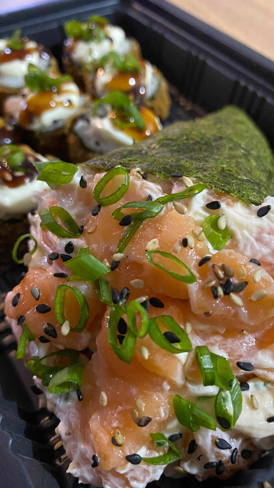
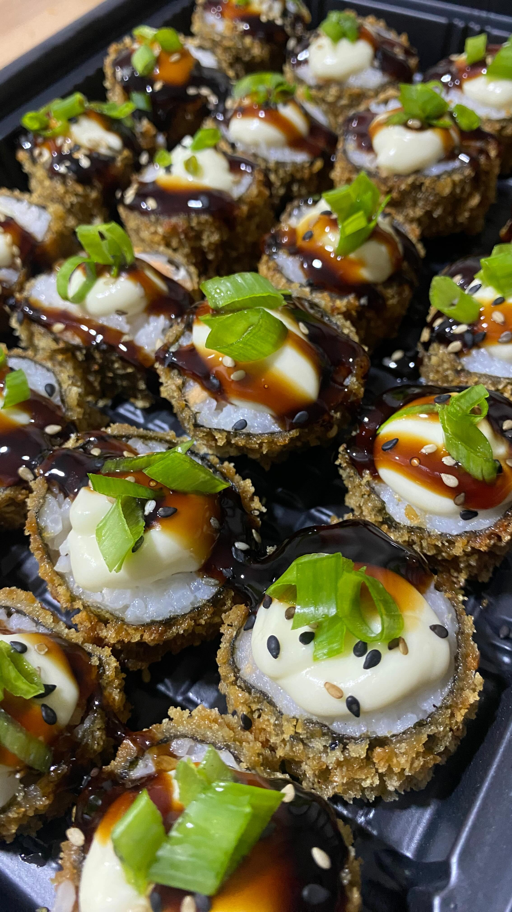

ABRE HOJE ÀS 18:00
Delivery Noturno · Retirada · Local
Passagem Orlando Dias, 255
Vila Nogueira · Diadema - SP
Pedidos Diretos & Cardápio
(11) 96400-9067
SEU TEMAKI


CROCANTE
Hot Roll Tarê
100% SALMÃO
Sem miséria no recheio
SUSHIBAR ARTESANAL NOTURNO
Transbordando Salmão.
Cubos generosos do topo até a ponta da alga. Sem arroz para fazer volume.